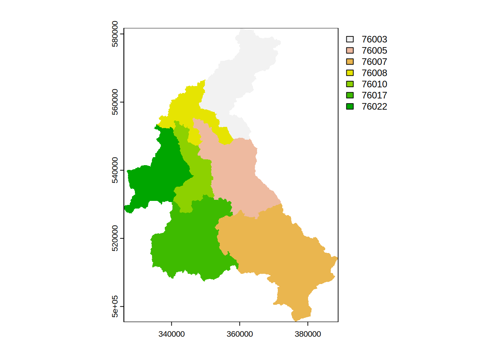

Initial GIS processing
Aim
To explore and pre-process the GIS data for the Eden catchment.
Required R Packages
R has multiple packages for the processing and analysis spatial data. A good overview is given in the Spatial Task View on CRAN. For this part of the training course we use a set of mature package terra which is a dependancy of dynatopGIS. Similar results could be genratered with other packages.
Attached the terra package to the R environment so that its functions are available.
library(terra)
library(dynatopGIS)and remember to move to the eden_data directory e.g.
setwd("../eden_data")Data Required by dynatopGIS
To build a Dynamic TOPMODEL the dynatopGIS package requires the following
- A raster map of the catchment, possiblly deliniating subcatchments
- A raster DEM covering the catchment
- A vector representation of the river network
Optionally the user can also provide
- A raster map deliniating spatial rainfall patterns
- A raster map deliniating spatial PET patterns
- Raster maps containing further data to help classify the HRUs
All raster data must in the same resolution and projection as the catchment map. The vector river data must have the same projection.
WARNING:
dynatopGISonly works with projected raster data with square cells!
WARNING:
dyntopGISpresumes all raster values are numeric!
Note The raster map of the catchment should have only
NAvalues in the edge row and columns.
Loading Data
There are four types of spatial data in the example; raster, polygons, lines and points; in three different formats; Geotiff, shapefile and csv.
To start use functions in the raster package to load both the raster data and that contained in the shapefiles:
dem <- rast(file.path(".","unprocessed","Eden_DEM.tif")) # load the dem as a raster layer
eden <- vect(file.path(".","unprocessed","Eden_Catchment.shp")) # load the outline of the sub-catchments from the shapefile
channel <- vect(file.path(".","unprocessed","Eden_River_Network.shp")) # load the river network from the shapefile
urban <- vect(file.path(".","unprocessed","Eden_Urban.shp")) # load the urban area map from the shapefileTyping the variable name at the R prompt will display a summary of the data loaded, for example
dem
#> class : SpatRaster
#> dimensions : 863, 629, 1 (nrow, ncol, nlyr)
#> resolution : 100, 100 (x, y)
#> extent : 326000, 388900, 495450, 581750 (xmin, xmax, ymin, ymax)
#> coord. ref. : OSGB36 / British National Grid (EPSG:27700)
#> source : Eden_DEM.tif
#> name : Eden_DEM
#> min value : -2.700
#> max value : 923.425Compare the dem, eden, channel and urban variable to check that:
- there is a common projection
- the cells of DEM are square
Reading the gauge locations from the csv file is a two stage process
# read in the csv file to a date.frame
csvGauges <- read.csv(file.path(".","unprocessed","Eden_Gauge_Sites.csv"))
# convert the data frame to a SpatVect object - take projection from the DEM
gauges <- vect(csvGauges,geom=c("x","y"),crs=crs(dem))Next plot the data using the default methods in the raster package
plot(dem) # underlying coloured image with scale
plot(urban,add=TRUE,col="grey") # grey polygons
plot(channel,add=TRUE,col="blue") # channels as blue lines
plot(eden,add=TRUE) # outlines of sub-catchments in black
plot(gauges,add=TRUE,col="red") # gauges as red +
Rasterising Layers
The basis of the landscape discretisation is the raster catchment map. In this example, as in many situation the catchment outlines are vectors shapes. These are rasterised using the grid provided by the raster DEM. In the catment map each subcatchment requires a unique numeric value which is provided by the id feild.
## show data frame with id values
head(eden)
#> id label
#> 1 76007 Eden at Sheepmount
#> 2 76003 Eamont at Udford
#> 3 76005 Eden at Temple Sowerby
#> 4 76017 Eden at Great Corby
#> 5 76008 Irthing at Greenholme
#> 6 76010 Petteril at Harraby Green
## rasterise
eden_raster <- rasterize(eden, dem, field="id")
## plot the resulting raster
plot(eden_raster)
To ensure the edges are NA values the raster is extended, along with that of the DEM
eden_raster <- extend(eden_raster,1)
dem <- extend(dem,1)Since the urban areas may be used in the classification they are also rasterised. Suitable numeric values are taken from the unique identifiers in the data.
In the case of the urban data there are two possible identifiers objectid and bua_id:
## show data frame with id values
head(urban)
#> objectid bua11cd bua11nm bua_id has_sd sd_count urban_bua
#> 1 39 E34000039 Penrith BUA 747 N 0 Yes
#> 2 47 E34000047 Brough (Eden) BUA 1465 N 0 No
#> 3 297 E34000297 Gilsland BUA 4584 N 0 No
#> 4 869 E34000869 Lazonby BUA 1016 N 0 No
#> 5 899 E34000899 Kirkby Stephen BUA 1359 N 0 No
#> 6 986 E34000986 Dalston BUA 919 N 0 No
#> st_areasha st_lengths
#> 1 4647359.1 19399.690
#> 2 324993.0 5799.919
#> 3 214996.1 3499.903
#> 4 412499.4 5600.042
#> 5 692492.4 9500.029
#> 6 582500.1 7699.932
## rasterise using objectid as the raster value
urban_raster <- rasterize(urban, eden_raster, field="objectid")
## plot the resulting raster
plot(urban_raster)
The raster fields created (eden_raster, urban_raster and extended dem) exist only in memory (or temporary files). Since they will be needed later we will save them:
writeRaster(eden_raster,file.path(".","processed","eden.tif"),overwrite=TRUE)
writeRaster(urban_raster,file.path(".","processed","urban.tif"),overwrite=TRUE)
writeRaster(dem,file.path(".","processed","dem.tif"),overwrite=TRUE)Channel Network
The representation of the channel network in dynatop is as a series of connected reach lengths. In the processing done by dynatopGIS Each reach is represented by a single spatial polygon. The data for each reach must include the following feilds:
- name - The unique identifier/name of the reach
- length - Length of the reach [m]
- startNode - An identifier for the head of the reach
- endNode - An identifier for the foot of the reach
- width - Channel width [m]
- slope - Channel slope [m/m]
The startNode and endNode values are used to define the channel connectivity, while the physical properties are used in the dynatop numerical solutions.
Looking at the channel data
channel
#> class : SpatVector
#> geometry : lines
#> dimensions : 1697, 9 (geometries, attributes)
#> extent : 327613.4, 388606.5, 496531.8, 581285.4 (xmin, xmax, ymin, ymax)
#> source : Eden_River_Network.shp
#> coord. ref. : OSGB36 / British National Grid (EPSG:27700)
#> names : name1 identifier startNode endNode
#> type : <chr> <chr> <chr> <chr>
#> values : NA 71496043-333C-~ 785AA707-7ACC-~ FD4A9B62-950E-~
#> Rowantree Gill C1E710A3-ED27-~ FD4A9B62-950E-~ 323B8FBC-8D31-~
#> Lady Sike 0B92A0E8-4B7B-~ 76150301-B4E4-~ 41DAD94A-AF47-~
#> form flow fictitious length name2
#> <chr> <chr> <chr> <int> <chr>
#> inlandRiver in direction false 31 NA
#> inlandRiver in direction false 986 NA
#> inlandRiver in direction false 321 NAwe see that it already contains
- an identifier for the foot of the reach called endNode
- an identifier for the head of the reach called startNode
- the reach length
- a unique identifier called identifier
but is composed to spatial lines rather then polygons.
The dynatopGIS package provides a function for convienitently converting line obejcts to the correct format.
conv_channel <- convert_channel(
channel,
property_names = c(name = "identifier", length = "length", startNode = "startNode",
endNode= "endNode"),
default_width = 2,
default_slope = 0.001
)
#> Warning in convert_channel(channel, property_names = c(name = "identifier", :
#> Modifying to spatial polygons using default width
#> Warning in convert_channel(channel, property_names = c(name = "identifier", :
#> Adding default slopeThw two warning messages reveal that, since they are not specified, default width and slope values are added. The width propoerty is used to buffer the channel resulting in spatial poygons.
conv_channel
#> class : SpatVector
#> geometry : polygons
#> dimensions : 1697, 12 (geometries, attributes)
#> extent : 327612.4, 388607.5, 496530.8, 581286.4 (xmin, xmax, ymin, ymax)
#> coord. ref. : OSGB36 / British National Grid (EPSG:27700)
#> names : name1 name startNode endNode
#> type : <chr> <chr> <chr> <chr>
#> values : NA 71496043-333C-~ 785AA707-7ACC-~ FD4A9B62-950E-~
#> Rowantree Gill C1E710A3-ED27-~ FD4A9B62-950E-~ 323B8FBC-8D31-~
#> Lady Sike 0B92A0E8-4B7B-~ 76150301-B4E4-~ 41DAD94A-AF47-~
#> form flow fictitious length name2 width area slope
#> <chr> <chr> <chr> <num> <chr> <num> <num> <num>
#> inlandRiver in direction false 31 NA 2 64.69 0.001
#> inlandRiver in direction false 986 NA 2 1975 0.001
#> inlandRiver in direction false 321 NA 2 645.2 0.001The converted channel data is saved for later use
writeVector(conv_channel,file.path(".","processed","channel.shp"),overwrite=TRUE)Locating Gauges on the Channel Network
Before locating the gauges on the network note that in the map of the loaded data there is a single gauge outside to the catchment area. As simple example of manipulating spatial data in R is to remove this by cropping the gauges to the catchment area. This is done by
gauges <- crop(gauges,eden)To determine the location of the gauges on the river network we identify for each gauge the closest reach. The identifier of this reach, along with the distance to the gauge data is then added to the gauge data.
dst <- distance(gauges,conv_channel) ## distance between gauges(row) and channels(column)
idx <- apply(dst,1,which.min) ## index of closest channel for each gauge
gauges$chn_identifier <- conv_channel$name[ apply(dst,1,which.min) ]
gauges$chn_distance <- apply(dst,1,min) ## distance to the channel
To check the results by plotting:
selected <- conv_channel[conv_channel$name %in% gauges$chn_identifier,]
plot(eden) # outlines of subcatchments in black
plot(conv_channel,add=TRUE,col="blue",border="blue") # channel network in blue
plot(selected,add=TRUE,col="orange",border="orange") # selected reachs in orange
plot(gauges,add=TRUE,col="red",pch=21) # gauges as red filled circlesThe cropped list of gauges with channel identifier can be saved to a shapefile:
writeVector(gauges,file.path(".","processed","gauges.shp"),overwrite=TRUE)The quality of results of any method used for any automatic method of locating the gauges depends upon the accuracy of the GIS data.
In the numeric solution used in dyantop it is assumed that a gauge is at the foot of a reach. This should be allowed from when conceptualising the channel reaches.